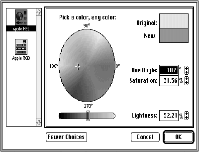

The limitations of the old Color Picker Package forced many developers to write their
own color pickers. The flexibility of Color Picker version 2.0 overcomes the old
limitations and provides many new features -- most notably, use with ColorSync
color. Now it's easy to design color pickers to suit your needs. This article describes
how to use the new Color Picker Manager and take advantage of its customization
features from within your application.
Apple designed the Color Picker Package as a way for applications to present a standard
user interface for color selection. The goal in developing Color Picker version 2.0 was
to remain compatible with the existing Color Picker Package while providing tighter
integration of color pickers with the application and allowing development of
customized color pickers (for example, to support other color spaces or specific
devices).
These goals were achieved by adding a Color Picker Manager, turning color pickers
into components, and separating the color picker components from the Color Picker
Manager. As components, color pickers are now accessed through the Component
Manager, which provides a layer between the application and the color picker
component. In other words, the application calls the Color Picker Manager, which then
calls the Component Manager, which calls the color picker component. In the old Color
Picker Package, the application called the color picker directly.
This separation of the color picker components from the Color Picker Manager allows
new color picker components to be dynamically added to the system by the user or an
application. Once a new color picker component has been registered to the Component
Manager, it's available for use by the Color Picker Manager.
The interface to the new Color Picker Manager is divided into high- and low-level
calls:
Unlike the old Color Picker Package, Color Picker 2.0 uses the more complete
ColorSync definition of a color, which contains both a color and a profile. The profile
defines the color space of the color (which includes the type of color -- CMYK, HSL,
RGB, and so on). You can also specify a destination profile, which describes the color
space of the device for which the color is being chosen (for example, a color printer
that will eventually print the document). Given knowledge of the destination profile,
color pickers that are ColorSync aware can help the user choose a color that's within
the destination device's gamut.
ColorSync is described in the forthcoming Inside Macintosh: Advanced Color
Imaging . See also "Print Hints: Syncing Up With ColorSync" in develop Issue 14.*
The ColorSync definition for a color, shown below, is used only with the new calls. The
old call, GetColor, still uses RGBColor for compatibility. These structures are
compatible with QuickDraw GX.
typedef struct CMProfile **CMProfileHandle;
typedef union {
RGBColor rgb;
unsigned short reserved[4];
} CMColor, *CMColorList;
typedef struct PMColor {
CMProfileHandle profile;
CMColor color;
} PMColor, *PMColorPtr;
If you're specifying an RGB color with no particular profile, you can simply set the
CMProfileHandle field of PMColor to nil, which uses the system profile. To specify a
color that uses a profile, you need to provide the profile that describes that color.
The high-level calls are designed to handle the most common uses for the Color Picker
Manager. The old GetColor call provides access to the new dialog and the color picker
component, but not to any of the new features that are accessible through the Color
Picker Manager (such as ColorSync colors).
The new PickColor call is designed to replace GetColor. It can be used very simply,
providing roughly the same feature set as GetColor, or it can be used to take advantage
of some of the more advanced features of Color Picker 2.0.
The new dialog for the high-level calls is much the same as the old one. A new button,
More Choices, reveals a list of all available color pickers (and changes to "Fewer
Choices"; see Figure 1). Clicking a color picker in the list makes it the current color
picker for the dialog. Both PickColor and GetColor display this dialog.
The biggest difference between PickColor and GetColor is that PickColor allows the
application to provide a pointer to an event filter procedure. If the application
supplies such a procedure, a movable modal dialog will be created rather than the old
modal dialog. You can do this from within PickColor because you're now able to pass
update events to windows within the same application layer as the color picker.
PickColor also uses the new ColorSync color definition, so you can specify a color in
any color space along with a destination profile. Likewise, a color can be returned in
any color space.

Figure 1. Color picker dialog for high-level calls
PICKCOLOR PARAMETER BLOCK
Listing 1 shows the parameter block that you pass through to PickColor. The first two
fields, theColor and dstProfile, are pretty obvious; they're simply the input (and
output) color and the profile for the final output device. If there's no output device,
you just set dstProfile to nil.
Listing 1. PickColor parameter block
typedef struct ColorPickerInfo {
PMColor theColor;
CMProfileHandle dstProfile;
long flags;
DialogPlacementSpec placeWhere;
Point dialogOrigin;
long pickerType;
UserEventProc eventProc;
ColorChangedProc colorProc;
long colorProcData;
Str255 prompt;
MenuItemInfo mInfo;
Boolean newColorChosen;
} ColorPickerInfo;
The flags field is a little more complicated. (It's also used in many of the low-level
calls.) With PickColor, there are three flags you need to worry about:
The placeWhere field tells the Color Picker Manager where to position the color picker
dialog. The choices are kAtSpecifiedOrigin (at the point specified by the dialogOrigin
field), kDeepestColorScreen (centered on the deepest color screen), and
kCenterOnMainScreen (centered on the main screen).
The dialogOrigin field (in conjunction with kAtSpecifiedOrigin) is used when you
request that the color picker dialog be placed at a specific point. When PickColor
returns, this field contains the location of the color picker dialog at the time it was
closed.
You use the pickerType field to specify the component subtype of the color picker to
select initially. If you set this field to 0, the default system color picker will be used
(the last color picker chosen by the user). When PickColor returns, this field
contains the component subtype of the color picker that was open when the user closed
the dialog.
You should set the eventProc field to point to an event filter procedure that will handle
events meant for your application. If this procedure returns true, the Color Picker
Manager won't process the event further. If it returns false, the Color Picker Manager
will handle the event if it was meant for the color picker. If you set this field to nil, a
modal dialog will be created (rather than a movable modal dialog).
The colorProc field can contain a pointer to a procedure that will be called whenever
the color changes. This allows live updating of colors in application documents as the
user selects them. The colorProcData field contains a long integer that's passed to the
color-changed procedure and can be used for any private data.
The prompt field is a prompt string that the color picker displays to give the user
some indication as to what the new color is for (for example, a highlight color).
The mInfo field tells the Color Picker Manager what the Edit menu ID is and where the
various menu items are located within it.
The newColorChosen field is set on return from PickColor. If true, it means that the
user chose a color and clicked OK; otherwise, the user clicked Cancel.
IMPLEMENTING PICKCOLOR
Now let's look at an example of how all this would be used. Listings 2 and 3 show two
callbacks -- the event filter procedure (MyEventProc) and the color-changed
procedure (MyColorChangedProc). In the color-changed procedure we assume that
ColorSync is installed. This is because we'll be setting the AppIsColorSyncAware flag
when we call PickColor, so a non-RGB color might come back from the picker and, if
so, you need to call ColorSync to convert it to RGB.
Listing 2. Event filter procedure
WindowPtr myDocWindow;
pascal Boolean MyEventProc(EventRecord *event) {
Boolean handled = false; // Assume we don't handle the event.
switch (event->what) {
case updateEvt:
// Check to see if the update is for our window.
if ((WindowPtr) event->message == myDocWindow) {
DoTheUpdate(myDocWindow);
handled = true;
}
}
return handled;
}
Listing 3. Color-changed procedure
pascal void MyColorChangedProc(long userData, PMColorPtr newColor) {
GrafPtr port;
CWorld cWorld;
CMColor color;
CMError cwError;
GetPort(&port);
SetPort(myDocWindow);
// Now check to see if the color has a profile. If so, we need to
// convert it to RGB space.
if (newColor->profile) {
// Create a color world and convert the color. This color
// world matches from the color's space to the system space
// (RGB).
cwError = CWNewColorWorld(&cWorld, newColor->profile, 0L);
if (cwError == noErr || cwError == CMProfilesIdentical) {
// We created the color world. Now match the color using
// a copy so that we don't munge the original.
color = newColor->color;
CWMatchColors(cWorld, &color, 1);
CWDisposeColorWorld(cWorld);
}
} else
color.rgb = newColor->color.rgb;
// Set the new color and paint the port with it.
myRGBColor = color.rgb;
RGBForeColor(&color.rgb);
PaintRect(&myDocWindow->portRect);
SetPort(port);
}
Once you have the two callback procedures, you can go ahead and call PickColor (see
Listing 4). Listing 4. Calling PickColor
ColorPickerInfo cpInfo;
PMColor savedColor;
// Set the input color to be an RGB color in system space.
cpInfo.theColor.color.rgb = myRGBColor;
cpInfo.theColor.profile = 0L;
cpInfo.dstProfile = 0L;
cpInfo.flags =
AppIsColorSyncAware | CanModifyPalette | CanAnimatePalette;
// Center the picker on the deepest color screen.
cpInfo.placeWhere = kDeepestColorScreen;
// Use the default picker.
cpInfo.pickerType = 0L;
// Install the callbacks.
cpInfo.eventProc = MyEventProc;
cpInfo.colorProc = MyColorChangedProc;
cpInfo.colorProcData = 0L;
strcpy(cpInfo.prompt,"\pChoose a new color");
// Tell the Color Picker Manager about the Edit menu.
cpInfo.mInfo.editMenuID = kMyEditMenuID;
cpInfo.mInfo.cutItem = kMyCutItem;
cpInfo.mInfo.copyItem = kMyCopyItem;
cpInfo.mInfo.pasteItem = kMyPasteItem;
cpInfo.mInfo.clearItem = kMyClearItem;
cpInfo.mInfo.undoItem = kMyUndoItem;
// Save the current color, in case the user cancels.
savedColor = cpInfo.theColor;
// And finally, pick that color!
if (PickColor(&cpInfo) == noErr && cpInfo.newColorChosen)
// Go use this new color. Remember it can be in any color space.
DoNewColorStuff(&cpInfo.theColor);
else
// Canceled or an error; restore old color.
DoNewColorStuff(&savedColor);
}
The low-level Color Picker Manager calls are designed to allow tight integration of an
application and a color picker (a floating palette, for example). Two features make
this possible: the application can specify the type of dialog to put the color picker in,
and the application maintains control over the event loop.
You can create three types of color picker dialogs with the low-level calls:
system-owned, application- owned, and color picker-owned.
The application interacts with all three types of dialogs in the same way once they're
created. The rest of this section describes how to create each type and then moves on to
discuss how the application interacts with the color pickers, no matter what type of
dialog you use. In other words, the type of dialog a color picker is in is abstracted
enough that the application can use roughly the same code to handle all three types.
CREATING THE DIALOG
When creating a system-owned dialog, the application needs to choose whether the
dialog will be modal, movable modal, or modeless. This is handled by the use of two
flags: DialogIsModal and DialogIsMoveable. Through obvious combinations of these
flags, all three dialog types can be created. A nonmovable, modeless dialog (neither flag
set) is illegal.
Listing 5 shows the code used to create a modeless system-owned dialog.
Listing 5. Creating a modeless system-owned dialog
SystemDialogInfo sInfo;
OSErr result;
sInfo.flags = DialogIsMoveable + AppIsColorSyncAware
+ CanModifyPalette + CanAnimatePalette;
sInfo.pickerType = 0L;
sInfo.placeWhere = kDeepestColorScreen;
sInfo.mInfo.editMenuID = kMyEditMenuID;
sInfo.mInfo.cutItem = kMyCutItem;
sInfo.mInfo.copyItem = kMyCopyItem;
sInfo.mInfo.pasteItem = kMyPasteItem;
sInfo.mInfo.clearItem = kMyClearItem;
sInfo.mInfo.undoItem = kMyUndoItem;
result = CreateColorDialog(&sInfo, &myPicker);
Listing 6 shows how to add a color picker to an application's own dialog
(application-owned dialog).
Listing 6. Creating an application-owned dialog
DialogPtr myDialog;
ApplicationDialogInfo aInfo;
OSErr result;
// First create the dialog (make sure it's a color dialog so that the
// color picker can do all the color stuff it needs to do!).
myDialog = GetNewDialog(kMyDialogID, nil, (WindowPtr)-1);
// Set up the ApplicationDialogInfo structure.
aInfo.flags = DialogIsMoveable + AppIsColorSyncAware
+ CanModifyPalette + CanAnimatePalette;
aInfo.pickerType = 0L;
aInfo.theDialog = myDialog;
// Put the color picker's origin at (0,0) in the dialog.
aInfo.pickerOrigin.h = 0;
aInfo.pickerOrigin.v = 0;
// Set the Edit menu information.
aInfo.mInfo.editMenuID = kMyEditMenuID;
aInfo.mInfo.cutItem = kMyCutItem;
aInfo.mInfo.copyItem = kMyCopyItem;
aInfo.mInfo.pasteItem = kMyPasteItem;
aInfo.mInfo.clearItem = kMyClearItem;
aInfo.mInfo.undoItem = kMyUndoItem;
// Finally, add the color picker to the dialog.
result = AddPickerToDialog(&aInfo, &myPicker);
Listing 7 shows how to create a color picker-owned dialog. As you can see, the code to
create all three types of dialogs is nearly identical. Likewise the code to manage them
after creation is very similar. Any explicit differences or requirements will be
pointed out and explained as they're encountered.
Listing 7. Creating a color picker-owned dialog
PickerDialogInfo pInfo;
OSErr result;
pInfo.flags = DialogIsMoveable + AppIsColorSyncAware
+ CanModifyPalette + CanAnimatePalette;
pInfo.pickerType = 0L;
pInfo.mInfo.editMenuID = kMyEditMenuID;
pInfo.mInfo.cutItem = kMyCutItem;
pInfo.mInfo.copyItem = kMyCopyItem;
pInfo.mInfo.pasteItem = kMyPasteItem;
pInfo.mInfo.clearItem = kMyClearItem;
pInfo.mInfo.undoItem = kMyUndoItem;
result = CreatePickerDialog(&pInfo, &myPicker);
SETTING AND GETTING THE CURRENT COLOR
One of the most obvious requirements for making a color picker useful is that there be
a way to set and get the current color. This is very simple. Complexities arise only if
you need to convert colors from the space they're returned in to a space you can
understand (such as RGB). The following examples assume you're familiar enough with
ColorSync to do this (Listing 2 shows how to convert from any space to system RGB
space). If you don't want to deal with this, don't set the AppIsColorSyncAware flag and
the Color Picker Manager will automatically convert any color it gets back from the
color picker to RGB.
The concepts of original color and new color have been carried through from the old
Color Picker Package to the new Color Picker Manager. Simply put, theoriginal color
is the color that the user is about to change and thenew color is the color to which the
user changes it. When setting the color for a color picker, you need to set both colors.
Suppose, for example, that you're writing an object-based paint program and have
created a floating color picker. When the user clicks an object, you want the color
picker to show the color of that object. You would do this by setting the original color
and new color for the color picker to the current color of that object. As the user
changes the color of the object, the original color would remain the same and the new
color would change. This gives feedback as to what would happen if the user were to
cancel the color change. The code to do this is very simple:
void SetPickerToColor(RGBColor *rgb) {
PMColor aColor;
aColor.color.rgb = *rgb;
aColor.profile = 0L;
SetPickerColor(myPicker, kOriginalColor, &aColor);
SetPickerColor(myPicker, kNewColor, &aColor);
}
Whenever the user changes the current color, you need to be able to get the new color
so that you can update your object accordingly:
void GetCurrentColor(RGBColor *rgb) {
PMColor aColor;
GetPickerColor(myPicker, kNewColor, &aColor);
*rgb = aColor.color.rgb;
}
Some of you might be saying, "But wait, this example is stupid. Isn't that what the
color-changed callback is for?" The answer is yes, in the modal case, when the
color-changed procedure is the only way the application knows that the color changed.
In the modeless case, as we'll see below in the section "Giving Events to the Color
Picker," the application is informed in other ways when the color changes. So in the
modeless case, you might want to view the colors that the color-changed procedure
provides you with as temporary colors and not update your internal data until the user
has actually chosen a color (or at least stopped dragging on a slider). You should then
make an explicit call to the Color Picker Manager to get the color, and update your
internal data.
SETTING THE DESTINATION PROFILE
If you're picking a color for an output device for which you have a ColorSync profile,
you can give this profile to the color picker component so that it can communicate the
profile's information to the user (assuming it knows how). You do this with a simple
call, SetPickerProfile. There's also a matching call, GetPickerProfile, to get the
current profile from the color picker. It's important to remember that the application
owns the memory of any profiles it gives or receives from the color picker. When you
set the destination profile, the color picker component makes a copy of the profile
handle; when you get the destination profile, you give the color picker component a
handle into which it copies the profile data. The following code shows how to set and get
the destination profile. Setting it is optional; the color picker assumes that there's no
profile unless you explicitly set one.
void SetDestinationProfile(CMProfileHandle profile) {
if (SetPickerProfile(myPicker, profile) != noErr)
HandleError();
}
void GetDestinationProfile(CMProfileHandle profile) {
if (GetPickerProfile(myPicker, profile) != noErr)
HandleError();
}
GIVING EVENTS TO THE COLOR PICKER
The basic model for giving events to the color picker is similar to DialogSelect. For the
most part, you give the event to the Color Picker Manager through the DoPickerEvent
call. It either handles the event or returns it to the application for the application to
handle.
There's one exception to this rule: menus. If you've created a modal system dialog, the
Color Picker Manager can handle the Edit menu events for you (as it does when you call
PickColor). However, for modeless color pickers there are many menu items that the
Color Picker Manager has no idea how to handle. If you do send these events through to
the Color Picker Manager, it will assume all Edit menu selections are meant for the
color picker and ignore everything else. Therefore, with modeless dialogs, the
application needs to be sure to handle its own menu events before calling
DoPickerEvent.
You'll also need to do some extra work in order for the Color Picker Manager to handle
the Edit menu correctly. If an Edit menu choice will be for the color picker (that is,
the color picker dialog is frontmost and the current text item in the dialog belongs to
the color picker), you need to set up the Edit menu as the Color Picker Manager and
color picker component want it. To determine how they want the Edit menu, call
GetPickerEditMenuState. If the user does choose an Edit menu item, the application
needs to call DoPickerEdit to tell the Color Picker Manager which edit operation to
perform. There's more on this later under "Handling the Edit Menu."
Each time you call DoPickerEvent and the color picker component or the Color Picker
Manager handles the event, it returns a constant describing what happened. There are
several possible results, which are listed in Table 1.
Table 1. DoPickerEvent return constants
| Constant | Meaning |
| kDidNothing | Nothing happened that's worth reporting. |
| kColorChanged | The user changed the color; you may need to call |
| GetPickerColor to get the new color. | |
| kOKHit | The user clicked OK; returned only by system- or |
| color picker-owned dialogs. | |
| kCancelHit | The user clicked Cancel; returned only by system- |
| or color picker- owned dialogs. | |
| kNewPickerChosen | The user chose a new color picker from the More |
| Choices list; returned only by system-owned | |
| dialogs. | |
| kApplItemHit | The Dialog Manager returned an item intended for |
| one of the application's dialog items; returned only | |
| by application-owned dialogs. |
Internally, the Color Picker Manager handles the event by calling DialogSelect and
then processing the event from there. If the color picker is in an application dialog and
an application item is selected, the Color Picker Manager returns kApplItemHit as
well as the item number.
There are a few things to keep in mind regarding the DoPickerEvent return constants.
How you handle kColorChanged with application dialogs depends on your application;
for system-owned and color picker-owned dialogs you probably should wait until the
user clicks OK before treating the color as final. With kOKHit, you should save the new
color and close the dialog. With kCancelHit, you should restore the old color and dispose
of the color picker. If kApplItemHit is returned, you need to handle the event as you
would for the Dialog Manager. You don't need to care about kNewPickerChosen, which
happens only with a system-owned dialog.
If you have a color-changed procedure for the color picker to call, you supply the
procedure, along with any data it needs to be called with, to DoPickerEvent.
Listing 8 shows what your event loop might look like. In this code we assume that you
always want to handle the menu events yourself, as discussed above. Listing 8.
Sample event loop
#define IsMenuKey(x) ((x)->what == keyDown && \
(x)->modifiers & cmdKey)
Boolean SampleDoEvent(EventRecord *event) {
Boolean handled = false, isMenuEvent = false;
EventData pEvent;
short inWhere;
WindowPtr whichWindow;
// We are assuming that the application always wants to handle
// menus.
if (event->what == mouseDown) {
inWhere = FindWindow(event->where, &whichWindow);
if (inWhere == inMenuBar)
isMenuEvent = true;
}
if (isMenuEvent || IsMenuKey(event)) {
DoMenu(event);
handled = true;
}
// If the event's not handled yet, call the Color Picker Manager
// to give it a shot.
if (!handled) {
pEvent.event = event;
pEvent.colorProc = MyModelessColorChangedProc;
pEvent.colorProcData = 0L;
DoPickerEvent(myPicker, &pEvent);
handled = pEvent.handled;
// If the color picker handled it, we might want to do
// something with the results.
if (handled) {
switch (pEvent.action) {
case kDidNothing:
break;
case kColorChanged:
UseNewColor(myPicker);
break;
case kOKHit:
UseNewColor(myPicker);
DisposeColorPicker(myPicker);
myPicker = nil;
break;
case kCancelHit:
UseOriginalColor(myPicker);
DisposeColorPicker(myPicker);
myPicker = nil;
break;
case kNewPickerChosen:
// You shouldn't care about this.
break;
case kApplItemHit:
// Handle the item as you would for the Dialog
// Manager.
HandleAppItem(pEvent.itemHit);
break;
}
}
}
if (!handled) {
// The event hasn't been handled. Treat it as you would any
// normal Macintosh event. If you have other dialogs, you
// need to call DialogSelect. Remember, if the event is a
// mouseDown, you already called FindWindow!
}
return handled;
}
FORECAST EVENTS
When dealing with a color picker, you'll sometimes need to warn it about a user action
that might affect it. For example, if you have a color picker in an application dialog and
the user closes that dialog, you might want to see if the color picker is in a state that
can handle this. If the user had just typed some numbers into the color picker that left
it in an inconsistent state, it would be nice if the color picker could have a chance to
complain to the user before it was indiscriminately closed.
You can do this by usingforecast events. These aren't really events in themselves,
butare warnings to the color picker. To send forecast events to the color picker
component,you use the same call as for regular events -- DoPickerEvent -- except
that you set the event field to nil and set the forecast field to an appropriate constant.
The color picker component tells you whether it's ready for the action to occur by
setting the handled field of the EventData structure to true if it's not ready and false if
it is.
For the most part, the only time your application needs to worry about this is when
the color picker is about to be closed. If the Color Picker Manager has instigated
theclosing (such as when the action field is set to kOKHit after you called
DoPickerEvent),you don't need to worry about telling the color picker component
because the Color Picker Manager has already done so. However, if the user has just
clicked the window's close box (for an application dialog) or has chosen Close from a
menu, you should send a forecast event to the color picker component.
The following example shows a function called CheckIfPickerCanClose. If this function
returns true, the color picker can close; otherwise, it can't close for some reason. It's
safe to assume that the color picker has informed the user of the problem.
Boolean CheckIfPickerCanClose() {
EventData pEvent;
pEvent.event = 0L; // Make it a forecast event.
pEvent.forcast = kDialogAccept;
DoPickerEvent(myPicker, &pEvent);
return !pEvent.handled;
}
HANDLING THE EDIT MENU
As mentioned earlier, the Edit menu takes some special work. In addition to standard
menu processing, if an Edit menu choice will be for the color picker, you need to set
the state of the Edit menu items according to the color picker specifications and, if an
Edit menu item is chosen, send the appropriate message to the color picker. This is
done through two simple calls: GetPickerEditMenuState and DoPickerEdit.
Once you've determined that there has been a mouse-down event in the menu bar or a
keyboard equivalent has been pressed, you need to determine who owns the Edit menu.
If the color picker is in a color picker-owned or system-owned dialog and it's
frontmost, the color picker obviously owns it. If the color picker is in an
application-owned dialog and it's frontmost, ownership of the Edit menu depends on the
current item. The choice really depends on your application. As a general rule,
whoever owns the current item owns the Edit menu. If you do call DoPickerEdit while
the current item belongs to your application, it will implement the standard cut, copy,
paste, and clear features for you. If your application needs to do more than this, you'll
need to handle it yourself. In Listing 9 we assume that the owner of the current item
owns the Edit menu. The item number for the application's last dialog item is
kMyLastItem. If you have a system-owned or color picker-owned dialog, this constant
should be set to 0. In an application-owned dialog the picker's items will always be
added after the application's, so your item numbers remain the same.
Listing 9. Handling the Edit menu
Boolean DoMenu(EventRecord *event) {
long mChoice;
EditData eData;
EditOperation eOperation;
// If picker is in front and current edit item is the picker's,
// set up the Edit menu the way the picker wants it.
if (FrontWindow() == myDialog &&
((DialogPeek)myDialog)->editField + 1 > kMyLastItem) {
MenuState mState;
MenuHandle theMenu;
GetPickerEditMenuState(myPicker, &mState);
theMenu = GetMenu(kMyEditMenuID);
if (mState.cutEnabled)
EnableItem(theMenu, kMyCutItem);
else
DisableItem(theMenu, kMyCutItem);
if (mState.copyEnabled)
EnableItem(theMenu, kMyCopyItem);
else
DisableItem(theMenu, kMyCopyItem);
if (mState.pasteEnabled)
EnableItem(theMenu, kMyPasteItem);
else
DisableItem(theMenu, kMyPasteItem);
if (mState.clearEnabled)
EnableItem(theMenu, kMyClearItem);
else
DisableItem(theMenu, kMyClearItem);
if (mState.undoEnabled) {
SetItem(theMenu, kMyUndoItem, mState.undoString);
EnableItem(theMenu, kMyUndoItem);
}
else
DisableItem(theMenu, kMyUndoItem);
}
// Give the event to the Menu Manager.
if (event->what == mouseDown)
mChoice = MenuSelect(event->where);
else
mChoice = MenuKey(event->message);
// If not the Edit menu, handle normally.
if (HiWord(mChoice) != kMyEditMenuID) {
HandleMenuChoice(mChoice);
return true;
}
switch (LoWord(mChoice)) {
case kMyCutItem:
eOperation = kCut;
break;
case kMyCopyItem:
eOperation = kCopy;
break;
case kMyPasteItem:
eOperation = kPaste;
break;
case kMyClearItem:
eOperation = kClear;
break;
case kMyUndoItem:
eOperation = kUndo;
break;
default:
eOperation = -1;
break;
}
if (eOperation >= 0) {
eData.theEdit = eOperation;
DoPickerEdit(myPicker, &eData);
// Ignore the results here; assume that the color changed.
UseNewColor(myPicker);
}
HiliteMenu(0);
return true;
}
The Color Picker Manager provides support for Balloon Help. Most applications don't
need to do anything special for Balloon Help to work for a color picker in any type of
dialog. However, for applications in which you need more control over Balloon Help,
you can call ExtractPickerHelpItem to get the balloon for the color picker. It's up to
the application to determine whether the cursor is over a color picker's item or one of
its own. The best way to do this is to check to see if it's over one of the application
items. If so, put up your own balloon; otherwise, call ExtractPickerHelpItem and put
up the balloon it returns. ExtractPickerHelpItem will ask the color picker for a
balloon and search the color picker's help resource for an appropriate balloon. If it
can't find one, it returns the error noHelpForItem.
The hardest part about using ExtractPickerHelpItem is determining which item the
cursor is over. Fortunately, there's a Dialog Manager call, FindDItem, that does the
dirty work for you. Listing 10 shows how you would use these calls. Everything in this
example is actually done by the Color Picker Manager internally; the example just
gives you a general idea of how to use the ExtractPickerHelpItem call.
Listing 10. Using ExtractPickerHelpItem
void DoBalloonHelp(void) {
HelpItemInfo helpInfo;
short itemNo;
Point where;
OSErr err;
GetMouse(&where);
itemNo = FindDItem(myDialog, where) + 1;
// Go and get the color picker's help item.
helpInfo.options = 0;
helpInfo.tip.v = helpInfo.tip.h = 0;
SetRect(&helpInfo.altRect, 0, 0, 0, 0);
helpInfo.theProc = 0;
helpInfo.variant = 0;
helpInfo.helpMessage.hmmHelpType = 0;
helpInfo.helpMessage.u.hmmPictHandle = 0L;
err = ExtractPickerHelpItem(myPicker, itemNo, 0, &helpInfo);
// Show the balloon if we found one.
if (err == noErr) {
// If altRect is empty, we need to use the item's rectangle.
if (EmptyRect(&helpInfo.altRect)) {
short iType;
Handle iHandle;
GetDItem(myDialog, itemNo, &iType, &iHandle,
&helpInfo.altRect);
}
// Convert the tip to dialog coordinates.
helpInfo.tip.h += helpInfo.altRect.left;
helpInfo.tip.v += helpInfo.altRect.top;
// Convert the tip and altRect to global coordinates.
LocalToGlobal(&helpInfo.tip);
LocalToGlobal((Point *) &helpInfo.altRect.top);
LocalToGlobal((Point *) &helpInfo.altRect.bottom);
// Finally, put the balloon up.
HMShowBalloon(&helpInfo.helpMessage, helpInfo.tip,
&helpInfo.altRect, 0L, helpInfo.theProc,
helpInfo.variant, kHMRegularWindow);
}
}
You should now have a general idea of how to use the new Color Picker Manager. Most
applications will need only the high-level calls. However, developers who use color
more thoroughly may want to take advantage of the low-level calls. The low-level calls
were designed to be very flexible and easy to use. The simple implementations shown
in this article are trivial; more complicated uses are possible, and shouldn't be much
harder to write.
Having experimented with the new features of Color Picker 2.0, you may still want to
write your own color picker component -- for example, to implement your own
floating color picker. The new Color Picker Manager makes it easier for you to write
your own color picker component and allows you to share it among several applications
(and make it available for general system use as well).
So take your pick of the color pickers already available through the high-level or
low-level calls or move beyond this article to create your own custom color picker
component. Either way, you're looking at a colorful future with Color Picker 2.0.
SHANNON HOLLAND, once of Apple and now starting up something elsewhere, had
little time to write his bio for this article. His only three activities include working,
eating, and sleeping. Once upon a time he had a life in which he enjoyed photography,
cultural activities, and abusing his friends.*
Color Picker version 2.0 ships with QuickDraw GX and also with System 7.5. The
forthcoming Inside Macintosh: Advanced Color Imaging will describe Color Picker 2.0
in detail. *
Thanks to our technical reviewers Don Moccia, Konstantin Othmer, and David
Surovell. *